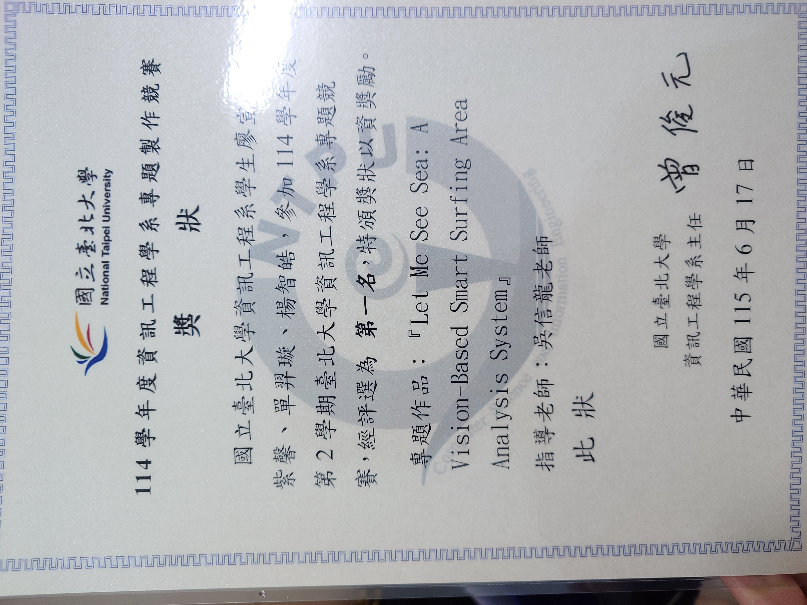

電腦視覺
關注物件偵測、多目標追蹤、影像分類與單目幾何估測，將視覺資訊轉換為可量化的環境指標。
RESEARCH INTERESTS
以電腦視覺與智慧應用系統為主軸，整合影像分析、行動應用與雲端服務，將辨識結果轉化為實際可用的資訊。
關注物件偵測、多目標追蹤、影像分類與單目幾何估測，將視覺資訊轉換為可量化的環境指標。
結合人工智慧、嵌入式裝置與軟體開發，應用於海浪分析與智慧交通，透過網頁或行動 App 呈現分析結果與即時提醒。
透過 Flutter App 開發、Firebase 串接與裝置通訊，整合影像辨識結果及使用者介面，累積跨平台開發與問題解決經驗。
SELECTED PROJECTS
以實際問題為起點，記錄所採用的方法、工程實作與成果佐證。
結合電腦視覺與單目幾何估測，將海浪影像轉換為可量化、可視覺化的區域級浪況指標。
傳統浪況判讀高度依賴人工經驗。本專題以單一固定式攝影機為輸入，目標是自動偵測海浪並提供客觀的浪況分析，協助使用者縮短事前準備時間及選擇合適浪板。
利用 RT-DETR 與 BoT-SORT 偵測並追蹤海浪，結合 SVC 紋理分類、單目視覺幾何與決策樹模型，估算浪高、辨識捲浪並劃分海域。分析結果上傳至 Firebase，以網頁視覺化呈現即時浪況。
資料集建制、海浪偵測與追蹤、浪花判斷處理、Firebase 串接與海域分區。
結合 Jetson TX2 影像辨識與 Flutter 行動應用，偵測兩段式左轉告示牌，並在原有導航情境中即時提醒騎士。
以「不改變既有導航習慣」為核心，透過背景運行 App、懸浮視窗及視覺模型，提供伴隨式安全提醒。
串接 YOLOv11、TFMini-S LiDAR、Bluetooth SPP、Google Maps API 與多執行緒處理，完成行動端及嵌入式端整合。
Jetson TX2 端影像辨識與 Flutter App 開發。
整合行動端、語音互動與雲端大型語言模型服務，打造即時互動式問答系統。
採用 Flutter 跨平台應用與 Dart TCP Server，建立 Client–Server 架構並串接雲端 LLM 服務。
整合語音輸入、文字問答與語音輸出，完成從使用者請求到模型回應的完整通訊流程。
在 Raspberry Pi 上執行道路速限標誌辨識，並將結果即時推播至手機端提供視覺與語音提醒。
將 YOLOv8 轉換為 ONNX 格式部署於 Raspberry Pi，以 OpenCV 與多執行緒完成即時影像處理。
透過 BlueZ、D-Bus 與 BLE 傳輸辨識結果，Flutter App 則以視覺化儀表及 TTS 提醒駕駛。
CONTACT
若您希望進一步了解我的專題內容、技術實作或研究興趣，歡迎與我聯繫。
